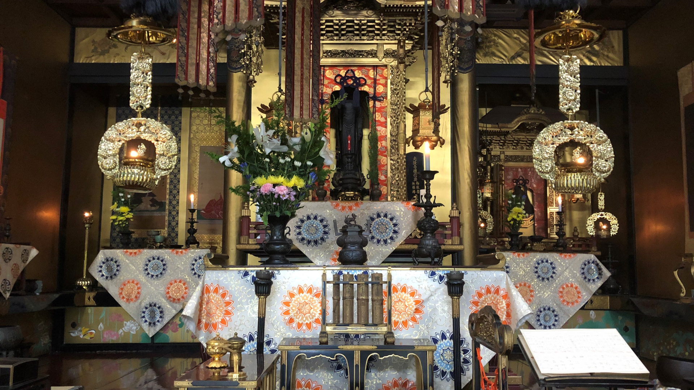

月のことば
寺の正門前に掲示していることばです。月に一度更新しております。光隆寺から「月のことば」と若藤会から「月のしるべ」の2種類掲示しておりますので、ぜひ一度お立ち寄りください。
2021.09
沖縄・広島・長崎だけでなく、
どこにいても戦争のことを常に忘れないようにしたい
お知らせ
2021.09.01
月のことば更新

2021.08.10
光隆寺ホームページ更新
スマホレイアウトに対応し、より見やすくなりました。
2021.08.01
盆会法要の勤修
感染症対策のため、勤行のみ勤修致しました。
2021.08.01
月のことば更新
光隆寺について

光隆寺は1670年に能化知空師により開かれた寺院です。
当寺初代の知空は学林と呼ばれる浄土真宗の教えを統べる組織のトップにおられた僧侶です。
現住職は、第十二代の河原知広が勤めております。
寺内の活動だけでなく、保護司や教誨師（受刑者の更生保護）、またボランティア活動を行い幅広く社会に貢献しております。
交通案内
- 所在地
- 京都府京都市下京区大宮通花屋町下る大宮二丁目577番地
- 市バス
- 島原口から徒歩約1分
- 七条大宮から徒歩約3分
- 電車
- 梅小路京都西駅から徒歩約10分
- 京都駅から徒歩約20分
- 車
- お車でお越しの方は以下にお電話ください
駐車場所を案内いたします - TEL：075-351-2708
お問い合わせ
ご質問・ご用件等ありましたらお電話より承っております。お気軽にお電話ください。
TEL：075-351-2708
TEL：075-351-2708